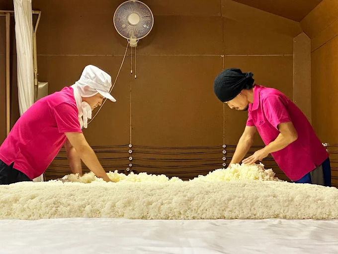
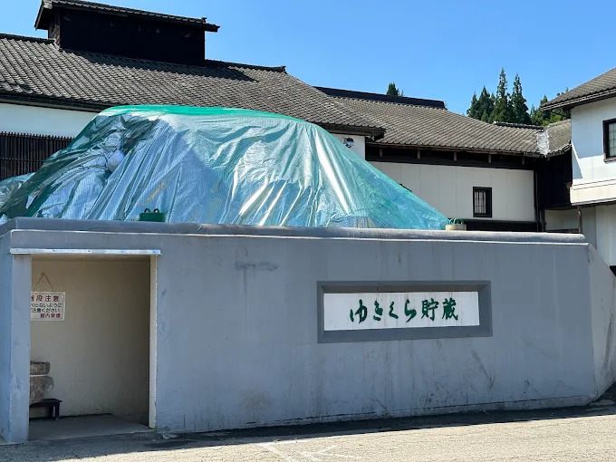
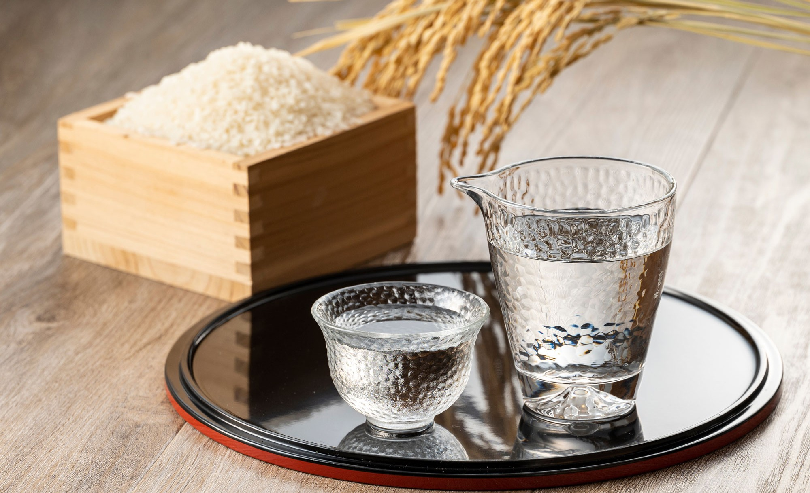
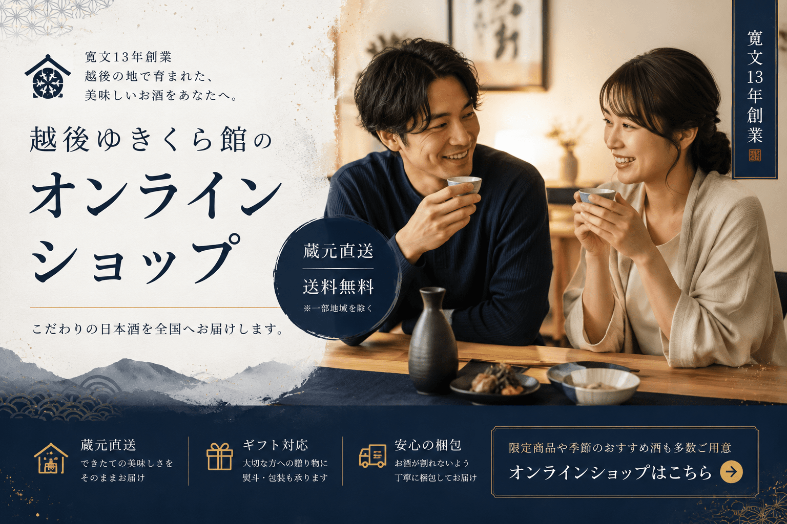

玉川酒造は、寛文13年、西暦1673年より酒造りを続ける魚沼の酒蔵です。
魚沼産コシヒカリでも知られる自然豊かな土地で、米、水、雪国の気候を活かした日本酒づくりを行っています。
越後ゆきくら館では、酒造りの工程や蔵のこだわりを見学しながら、魚沼で生まれる清酒の魅力を感じていただけます。
酒蔵見学は予約不要・無料で、
お一人様からご見学可能です。
こんな方におすすめです
豊かな雪、水、米に恵まれた魚沼の地で、長い歴史を受け継ぎながら酒造りを行っています。
土地の恵みを活かした清酒の味わいを、見学や試飲を通してお楽しみいただけます。

酒蔵見学では、お米から日本酒ができるまでの流れを知ることができます。
専門的な内容も分かりやすくご案内するため、日本酒に詳しくない方でも楽しみながら見学できます。

玉川酒造の見どころのひとつが、万年雪を利用したお酒の貯蔵庫「ゆきくら」です。
雪国・魚沼ならではの自然を活かした貯蔵庫の中に入り、雪と日本酒が生み出す特別な空間を体感できます。酒蔵見学だけでなく、魚沼らしい観光体験としても大変おすすめです。
見学後には、10種類以上のお酒を無料で試飲いただけます。
鑑評会で受賞した銘柄や、個性豊かな日本酒・リキュールなど、
玉川酒造ならではの味わいを飲み比べできます。
日本酒が好きな方はもちろん、
甘みのあるお酒や個性的なお酒を
楽しみたい方にもおすすめです。
営業時間
9:00〜16:00
見学受付
15:30まで
定休日
1月1日
※12月～2月は臨時休業の可能性があります。
ご来館前にお問い合わせください。
見学後には試飲やお買い物もお楽しみいただけます。
酒蔵でしか買えない限定酒もございますので、魚沼へお越しの際はぜひお立ち寄りください。

玉川酒造が大切にしているのは、日本酒のおいしさだけではありません。
魚沼の自然、雪国の知恵、長く受け継がれてきた酒造りの歴史。
そのすべてを感じていただける場所が、越後ゆきくら館です。
お米から日本酒ができるまでの工程を見学し、万年雪の貯蔵庫に入り、
最後は玉川酒造の銘柄を飲み比べる。
日本酒が好きな方も、観光で訪れる方も、
魚沼ならではの酒蔵体験をぜひお楽しみください。
団体でのご来館や詳しい見学内容については、
事前のお問い合わせをおすすめします。
皆様のご来館を心よりお待ちしております。
Store
Address
〒946-0216
新潟県魚沼市須原１６４３
Tel
Open
9:00～16:00 （見学最終受付15:30）
Close
1月1日
※12月～2月は臨時休業の可能性あり（要問合せ）
